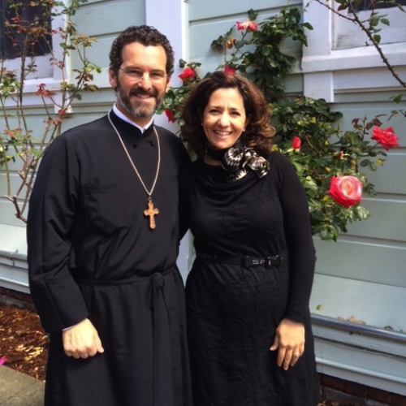
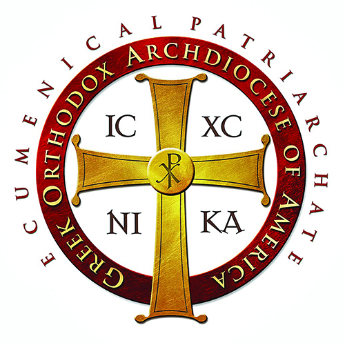

Sts. Peter & Paul
Greek Orthodox Church
A proud member of the Boulder County community since 1973.
Welcome to ToO 2017
On behalf of the Saints Peter and Paul community, I would like to extend a warm WELCOME to all of you attending the 14th annual Taste of Orthodoxy! This event continues to grow every year, and we are excited to share the many facets of our community with you.
Members of our parish have roots in Greece, Serbia, Romania, Russia, the Middle East, and even as far as Arvada! As our community is so culturally diverse, we are serving various foods from Greece, the Mediterranean region, and throughout the Middle East. We also have a variety of Greek wines and local micro-brews to quench your thirst after dancing. And please make sure to share some loukoumathes with your friends or relax over a Greek coffee and a piece of baklava.
You will find a full schedule of events for the weekend on the following pages. On our outdoor stage, we have live music with local band Jesse Manno and Friends on Friday and Saturday evenings and Sunday afternoon. Our own Dancing Zorbas dance group, amongst others will perform a variety of dances from many different regions throughout Greece. Please also take the time to visit our church, where you can see some Orthodox iconography, smell the incense from service, and hear our traditional Byzantine choir perform a range of hymns from various services.
It is truly a joy to share our hospitality with you, and we hope that you enjoy the festivities!
George Tsiouvaras
President, Parish Council
Καλῶς Oρίσατε!

I would like to personally thank you for visiting our event and hope that you'll enjoy some Greek food, pastries and souvenirs. Bring your family, friends, neighbors, and co-workers to experience a local flavor of Greece. We will have tours of the inside of the church, informal Q&A sessions on Orthodox Christianity, and various costumed dancers celebrating Greek and Romanian traditional dances. You can even learn how to Greek dance with our local dance group!
Thank you to everyone in the community who is attending, church parishioners, parish council members, the Taste of Orthodoxy organizing committee, businesses who donated goods and services for this event, and to advertisers who are supporting our Taste of Orthodoxy event brochure.
I wish you an enjoyable experience at our event! OPA!
Fr. Jordon Brown
Proistamenos
Our Parish

The mission of Sts. Peter and Paul is to be a beacon of Orthodox Christian spirituality in the greater Boulder area. Our diverse church family ecompasses many converts to the Faith, as well as Greek, Arab, Romanian, Serbian and Russian Orthodox members. We strive together to live our Orthodox Christian Faith by having a devoted prayer life, through fasting and alms-giving, and by participating regularly in the services and Sacraments of the Holy Orthodox Church.
We welcome everyone to visit our parish to experience the ancient forms of worship that existed in the early centuries of the Christian Church- which we continue to practice unchanged today. Please take some time to visit our Church, look through our website to learn more about our parish and our Faith, and if you have any questions, feel free to ask anyone wearing one of the Sts. Peter & Paul T-shirts or call Fr. Jordan at 303-581-1434.